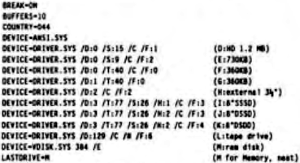

Scorpio News |
October–December 1987 – Volume 1. Issue 4. |
| Page 49 of 55 |
|---|
I had never touched MS-DOS until I picked up my AT, so when I got my machine home, I set about reading the MS-DOS 3.2 manual and discovered that it was, in my opinion, just a rip-aff of CP/M 2.2 but with the addition of tree directories, directory hashing and more support for program co-residency. It’s presentation and friendliness are poor and slapdash (e.g. you type DIR to have a list disappear off the top of the screen, or DIR/W to to get an unsorted directory without total space occupied etc.). It is more reminiscent of CP/M 1.1 in it’s friendliness. And this is version 3.2, God knows what the early versions wore like! CP/M 22 patched with CCPZ leaves it standing and ZCPR is even better.
My first task then was to get the 360K disk configured for reliable operation and then the 730k format on the HD drive would be an easy next task. I constructed a CONFIG.SYS file with EDLIN (which though basic, is quite adequate and suitable for the creation of batch files). I worked out that for a system with 2 floppies and 1 winnie, the first memory device in the list would be allocated to logical device D:, the next to E:, etc. I used the statement:
DEVICE=DRIVER.SYS /D:1 /T:40 /F:0
rebooted, did FORMAT D: and the disk formatted perfectly. I must admit that I did mess around with the /S, /H and /C parameters before I arrived at the above, and I have to say that the results were peculiar. The only logic I could make of it was that MS-DOS didn’t like being told something it didn’ need to be told, even though it was true, or possibly there was an undocumented limit on the number of parameters that could be passed. Anyway why worry I thought, after ass it works. So, full of confidence that I had mastered MS-DOS and shown the “experts” to be wrong, I set about an entry in CONFIG.SYS for the the HD drive and settled on:
DEVICE=DRIVER.SYS /D:0 /F:2
I had by this time come to some conclusions about the way MS-DOS handles disk formats: It does an “intelligent” analysis of the drives present at system initialisation, it sometimes does an “intelligent” analysis of the disk, it gets both analyses wrong from time to time and the two imperfections taken together produce low reliability and high inscrutability.
I therefore decided that I would by-pass any “auto density searching” by having distinct entries in my CONFIG.SYS file for each density I would be using and not depend on the MS-DOS logical devices A: and B: My CONFIG SYS file now looked something like this:–
I was getting pretty confident, including 3½″ and 8″ drives still to be connected, a tape drive which was a figment of my imagination and a ramdisk using the space between 640K and 1024K which MS-DOS seems unable to handle as ordinary memory. I was now able to format 360K, 730K and 1.2M discs without problems, or so I thought.
It was about this time that I read an article in Scorpio News by one D.R.H. Could it be that I knew something he did not? The answer is no or not much, for after our sequeane of ’phone conversations it became evident that the 730K disks, although verifying as 731016 bytes were in fact only 360K with only even numbered tracks recorded plus track 79 recorded 40 times.
Also at this time I was trying to connect my 8″/3½″ drive subsystem which I had been using with my Gemini. It didn’t work. The scope showed that 2 device select lines were being driven for each drive i.e. 0 & 1 for D:0 and 2 & 3 for D:1, meaning that it was impossible to add a third or fourth drive. The only apparent and pretty appalling reason for this was the transposition of the wiring sequence of the D0 D1 D3 and motor lines for D:0 and leaving them alone for D:1 meaning that all
| Page 49 of 55 |
|---|